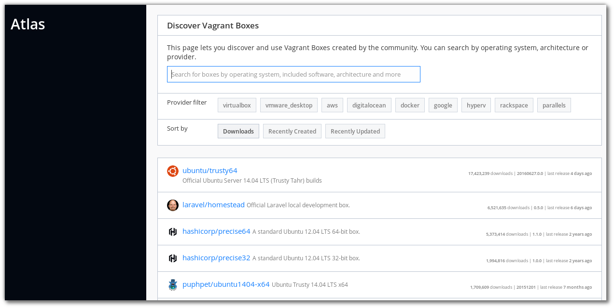

Build Infrastructure¶
Vagrant¶
การใช้งาน vagrant เพื่อสร้าง development environment

Install vagrant¶
sudo dnf group install "C Development Tools and Libraries"
sudo dnf install ruby-devel zlib-devel
sudo dnf install libxslt libxslt-devel libxml2 libxml2-devel redhat-lsb
sudo dnf install libxslt-devel libxml2-devel libvirt-devel libguestfs-tools-c ruby-devel
sudo dnf install redhat-rpm-config patch
sudo gem install nokogiri -v '1.6.8'
wget https://releases.hashicorp.com/vagrant/1.8.4/vagrant_1.8.4_x86_64.rpm
sudo dnf install vagrant_1.8.4_x86_64.rpm
vagrant plugin install vagrant-libvirt
vagrant plugin install vagrant-scp
repository¶
สามารถค้นหาและdownload image เพื่อเตรียมทดสอบ https://atlas.hashicorp.com/boxes/search
อีกที่หนึ่ง http://www.vagrantbox.es/

Download box
$ vagrant box add centos/7
==> box: Loading metadata for box 'centos/7'
box: URL: https://atlas.hashicorp.com/centos/7
This box can work with multiple providers! The providers that it
can work with are listed below. Please review the list and choose
the provider you will be working with.
1) libvirt
2) virtualbox
Enter your choice:
vagrantfile¶
สร้าง project directory เพื่อการทดสอบ และ download box เพื่อ add ภายหลัง * download vagrant box centos os 7
$ vagrant box add centos/7 ./libvirt.box
$ mkdir project01
$ cd project01
$ vagrant init centos/7
$ cat Vagrantfile
(result เมื่อลบ comment ออก)
# -*- mode: ruby -*-
# vi: set ft=ruby :
Vagrant.configure("2") do |config|
config.vm.box = "centos/7"
end
$ vagrant up --provider libvirt
เพิ่มเติม vagrantfile ด้านล่าง
# -*- mode: ruby -*-
# vi: set ft=ruby :
Vagrant.configure("2") do |config|
config.vm.box = "centos/7"
config.vm.define :server1 do |node|
node.vm.network :private_network, :ip => "10.0.0.10"
node.vm.provider :libvirt do |domain|
domain.uri = 'qemu+unix:///system'
domain.driver = 'kvm'
domain.host = "server1.example.com"
domain.memory = 2048
domain.cpus = 2
domain.nested = true
domain.volume_cache = 'none'
domain.storage :file, :size => '20G'
domain.storage :file, :size => '20G'
domain.storage :file, :size => '20G'
end
end
config.vm.define :server2 do |node|
node.vm.network :private_network, :ip => "10.0.0.11"
node.vm.provider :libvirt do |domain|
domain.uri = 'qemu+unix:///system'
domain.driver = 'kvm'
domain.host = "server2.example.com"
domain.memory = 2048
domain.cpus = 2
domain.nested = true
domain.volume_cache = 'none'
end
end
end
กดเลือก double click lab1_server1 (lab1 ชื่อ project directory และ server1 เป็น ชื่อ VM)

กดเลือก รูปหลอดไฟเพื่อดูรายละเดียด

Connect to VM¶
สามารถเชื่อมผ่าน virsh
[lab1]$ sudo virsh list
Id Name State
----------------------------------------------------
1 lab1_server2 running
2 lab1_server1 running
[lab1]$ sudo virt-viewer lab1_server1
ให้ใช้ username vagrant และ password vagrant แล้วจึงค่อยเปลี่ยนเป็น root ด้วยคำสั่ง sudo su -